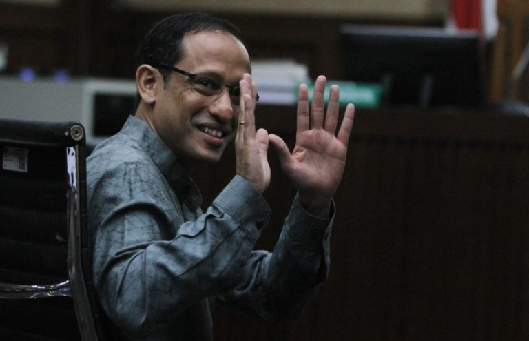

Latest News
Nadiem Makarim Chromebook Case: Prosecution Demands 18 Years, Defence Disputes the Evidence

Former Minister of Education Nadiem Anwar Makarim is on trial at the Jakarta Corruption Court over the procurement of Chromebook laptops during his tenure from 2019 to 2024. Prosecutors are demanding 18 years in prison, but his defence team has strongly contested the charges — arguing that no money was ever directly received by Nadiem and that the case confuses poor policy with criminal intent.
What Prosecutors Claim
The Attorney General's Office alleges that between 2020 and 2022, Nadiem manipulated the Chromebook procurement process to favour Google's Chrome OS, causing state losses of approximately Rp 2.18 trillion. Prosecutors claim the tender specifications were written to make Google the sole controller of Indonesia's education technology ecosystem.
They allege Nadiem enriched himself by approximately Rp 809.59 billion through PT AKAB (his former company, later part of GoTo/Gojek), linked to subsequent Google investments. In addition to 18 years in prison, prosecutors are demanding a Rp 1 billion fine and total restitution of Rp 5.68 trillion.
Nadiem's Defence: "No Money Ever Entered My Account"
Nadiem and his legal team have firmly denied all allegations. His defence rests on several key arguments:
- ✓ No direct money received. Nadiem stated in court that no funds from the Chromebook procurement ever entered his personal account. He questioned the prosecution's own contradictory claim — alleging he received cash in one part of the indictment, then pointing to securities as proof of enrichment in another.
- ✓ He divested from PT AKAB upon taking office. His defence argued that he gave up his stake in the company before becoming minister, removing any direct financial conflict of interest.
- ✓ His personal wealth fell during his tenure. Defence evidence showed his net worth dropped by more than 50% while he was minister — the opposite of what enrichment from corruption would suggest.
- ✓ Procurement decisions were made by technical teams, not the minister. His lawyers argued that the actual procurement process was handled by officials and technical staff within the ministry, not personally directed by Nadiem.
- ✓ Google's investment predated his tenure. Defence attorneys argued that Google's investment in Indonesia largely predated Nadiem's time as minister and was part of routine business expansion, not a reward for procurement decisions.
- ✓ Google itself denied involvement. Three former senior Google executives testified via Zoom at the Jakarta court, with their testimony undercutting the prosecution's claim that Google's investment was tied to the Chromebook procurement.
Nadiem also spoke about his upbringing and values in court, saying he was raised in a family that strongly upheld anti-corruption principles — and that returning to Indonesia to serve as minister, despite his success abroad, reflected his commitment to the country.
"Nadiem's strongest defence is also the one most uncomfortable for his critics: bad policy is not corruption. A minister can make an imperfect technology bet — especially during a pandemic — without conspiring to enrich himself. A procurement choice can fail without being corrupt."
— PEAK Magazine, May 2026
New Evidence Ignored, Says Defence
After prosecutors read out their 18-year demand, Nadiem's lawyer Ari Yusuf Amir said the defence was deeply disappointed, arguing that new evidence presented during the trial had been ignored by the prosecution entirely. The defence is expecting a verdict to be delivered in June 2026.
Current Status
Nadiem is currently under house arrest after his detention was converted due to health concerns, including a scheduled surgery. The trial is ongoing and a verdict has not yet been delivered. He is charged alongside four co-defendants; one, Jurist Tan, remains at large.